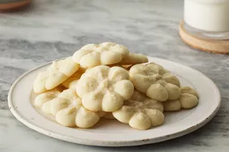

Shortbread Cookies

Shortbread Cookies.
This classic shortbread cookie recipe makes rich, buttery, melt-in-your-mouth press cookies using just 4 simple ingredients that you probably have in your pantry. They're easy to decorate and perfect for Christmas cookie plates.
Ingredients
Butter
Vanilla
Flour
Sugar
Steps
Preheat the oven to 350 degrees F (180 degrees C).
Beat softened butter and sugar together in a large bowl with an electric mixer until light and fluffy.
Stir in vanilla; add flour and mix well until combined.
Fill cookie press with dough and form cookies onto two ungreased cookie sheets, spacing them about 1 ½ inches apart.
Bake until the edges of the cookies are just starting to turn golden brown, about 10 to 12 minutes.
Remove the cookie sheets from the oven, and set them on a wire cooling rack for a few minutes.